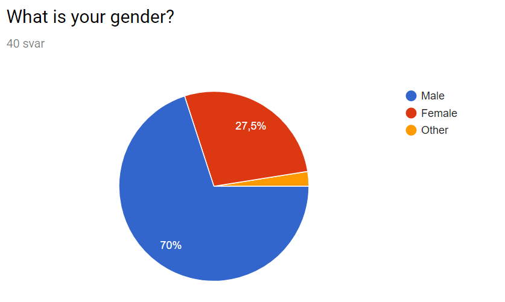

Problemet
Mange lærere og studenter har forskjellige kalendere og platformer de bruker på skolen og i privatlivet. Dette fører til at man må holde styr på to eller tre kalendre på en daglig basis.
Statistikk
Vi gjorde en spørreundersøkelse for å bedre kunne forstå problematikken med bruk av kalendere fra dag til dag. Dataene vi fikk inn bekreftet at det er behov for et produkt som UNICAL hos dagens studenter.
Metode
Vi gjennomførte undersøkelsen og delte inn grupper etter oppgitt kjønn. Dette ble gjort for å se om begge kjønn har problemer med planlegging av sin hverdag. I undersøkelsen spurte vi om kalendervanene til vår brukergruppe. Spørreundersøkelsen ble delt med medstudenter og ingeniørstudenter ved andre skoler. Det vi merket var at kvinner i større grad var interessert i dette produktet. Forøvrig er etterspørselen etter et slikt produkt ikke bare noen kvinner ville ha, siden majoriteten av de spurte mennene også ønsket et lignende produkt.

For menn
For kvinner
Resultater

For menn
For kvinner
Med resultatene fra undersøkelsen konkluderer vi med at dette er et produkt som har livets rett. Både mellom kvinner og menn var det klar enighet i at et produkt som dette ville være svært attraktivt for dette markedssegmentet.